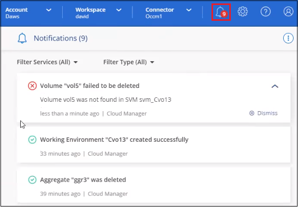
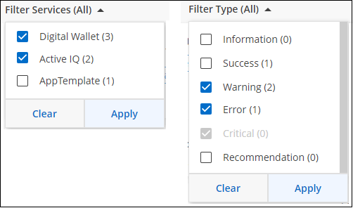
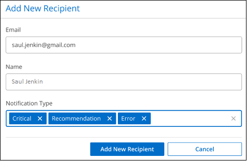

Demander de modifier un document
Demander de modifier un document Modifier sur GitHub
Modifier sur GitHub Guide des contributeurs
Guide des contributeursSurveillance des opérations dans votre compte
Contributeurs
Vous pouvez surveiller l’état des opérations que BlueXP effectue pour voir si des problèmes doivent être résolus. Vous pouvez afficher l’état dans le centre de notification, dans le calendrier ou envoyer des notifications à votre courrier électronique.
Ce tableau fournit une comparaison du centre de notification et du calendrier pour vous permettre de comprendre ce que chacun a à offrir.
| Centre de notification | De la chronologie |
|---|---|
Affiche l’état général des événements et des actions |
Fournit des détails sur chaque événement ou action pour une enquête plus approfondie |
Affiche l’état de la session de connexion en cours - les informations n’apparaîtront pas dans le Centre de notification après la déconnexion |
Conserve le statut pour le dernier mois |
Affiche uniquement les actions initiées dans l’interface utilisateur |
Affiche toutes les actions à partir de l’interface utilisateur ou des API |
Affiche les actions lancées par l’utilisateur |
Affiche toutes les actions, qu’elles soient lancées par l’utilisateur ou par le système |
Filtrez les résultats en fonction de l’importance |
Filtrez par service, action, utilisateur, état, etc |
Permet d’envoyer des notifications par e-mail aux utilisateurs du compte et à d’autres utilisateurs |
Aucune capacité de messagerie |
Surveillance des activités à l’aide du Centre de notification
Les notifications suivent la progression des opérations que vous avez lancées dans BlueXP pour vous permettre de vérifier si l’opération a réussi ou non. Elles vous permettent d’afficher l’état de nombreuses actions BlueXP que vous avez lancées pendant votre session de connexion actuelle. Tous les services ne rapportent pas d’informations au Centre de notification pour le moment.
Vous pouvez afficher les notifications en cliquant sur le signal sonore de notification () dans la barre de menus. La couleur de la petite bulle dans la cloche indique la notification de gravité de niveau le plus élevé qui est active. Si vous voyez une bulle rouge, cela signifie qu’il y a une notification importante que vous devriez regarder.

Vous pouvez également configurer BlueXP pour envoyer des notifications par e-mail afin de vous informer de l’activité système importante, même lorsque vous n’êtes pas connecté au système. Des e-mails sont envoyés à tous les utilisateurs qui font partie de votre compte cloud NetApp ou à tout autre destinataire ayant besoin de connaître certains types d’activité système. Voir Définition des paramètres de notification par e-mail ci-dessous.
Types de notification
Les notifications sont classées dans les catégories suivantes :
| Type de notification | Description |
|---|---|
Primordial |
Un problème peut entraîner une interruption des services si des mesures correctives ne sont pas prises immédiatement. |
Erreur |
Une action ou un processus s’est terminé avec un échec ou pourrait entraîner un échec si aucune mesure corrective n’est prise. |
Avertissement |
Un problème que vous devez savoir pour vous assurer qu’il n’atteint pas la gravité critique. Les notifications de ce niveau de gravité n’entraînent pas d’interruption des services, mais une action corrective immédiate peut ne pas être nécessaire. |
Recommandation |
Il est recommandé de prendre des mesures pour améliorer le système ou un service donné, par exemple : réduction des coûts, suggestion de nouveaux services, configuration de sécurité recommandée, etc |
Informations |
Message fournissant des informations supplémentaires sur une action ou un processus. |
Réussite |
Une action ou un processus s’est terminé avec succès. |
Filtrage des notifications
Par défaut, toutes les notifications s’affichent. Vous pouvez filtrer les notifications que vous voyez dans le Centre de notification pour n’afficher que les notifications importantes pour vous. Vous pouvez filtrer par BlueXP "Service" et par notification "Type".

Par exemple, si vous souhaitez afficher uniquement les notifications "erreur" et "Avertissement" pour les opérations BlueXP, sélectionnez ces entrées et vous ne verrez que ces types de notifications.
Définition des paramètres de notification par e-mail
Vous pouvez envoyer par e-mail des types de notifications spécifiques afin de vous informer de l’activité système importante, même lorsque vous n’êtes pas connecté à BlueXP. Il est possible d’envoyer des e-mails aux utilisateurs qui font partie de votre compte NetApp ou à tout autre destinataire ayant besoin de connaître certains types d’activité système.

|
|
Par défaut, les administrateurs de compte BlueXP recevront des e-mails pour toutes les notifications « critiques » et « recommandations ». Par défaut, tous les autres utilisateurs et destinataires sont configurés pour ne pas recevoir d’e-mails de notification.
Pour personnaliser les paramètres de notifications, vous devez être administrateur de compte.
-
Dans la barre de menus BlueXP, cliquez sur Paramètres > Paramètres d’alertes et de notifications.

-
Sélectionnez un utilisateur ou plusieurs utilisateurs à partir de l’onglet Account Users ou de l’onglet Additional Recipients, puis choisissez le type de notifications à envoyer :
-
Pour apporter des modifications à un seul utilisateur, cliquez sur le menu dans la colonne Notifications de cet utilisateur, cochez les types de notifications à envoyer et cliquez sur appliquer.
-
Pour apporter des modifications à plusieurs utilisateurs, cochez la case de chaque utilisateur, cliquez sur gérer les notifications par e-mail, cochez les types de notifications à envoyer et cliquez sur appliquer.

-
Ajout de destinataires d’e-mail supplémentaires
Les utilisateurs qui s’affichent dans l’onglet Account Users sont automatiquement renseignés à partir du site NetApp Account (du "Gérer le compte"). Vous pouvez ajouter des adresses e-mail dans l’onglet destinataires supplémentaires pour d’autres personnes ou groupes qui n’ont pas accès à BlueXP, mais qui doivent être informés de certains types d’alertes et de notifications.
-
Dans la page Paramètres des alertes et notifications, cliquez sur Ajouter de nouveaux destinataires.

-
Entrez le nom, l’adresse e-mail et sélectionnez les types de notifications que le destinataire recevra, puis cliquez sur Ajouter un nouveau destinataire.
Rejet des notifications
Vous pouvez supprimer des notifications de la page si vous n’avez plus besoin de les voir. Vous pouvez rejeter toutes les notifications en une seule fois ou rejeter les notifications individuelles.
Pour ignorer toutes les notifications, dans le Centre de notification, cliquez sur  Et sélectionnez rejeter tout.
Et sélectionnez rejeter tout.
Pour ignorer des notifications individuelles, placez le curseur sur la notification et cliquez sur rejeter.
Audit de l’activité de l’utilisateur dans votre compte
Le Timeline de BlueXP affiche les actions que les utilisateurs ont effectuées pour gérer votre compte. Cela inclut des actions de gestion telles que l’association d’utilisateurs, la création d’espaces de travail, la création de connecteurs, etc.
La vérification de la chronologie peut être utile si vous devez identifier qui a effectué une action spécifique ou si vous devez identifier le statut d’une action.
-
Dans la barre de menus BlueXP, cliquez sur Paramètres > Chronologie.
-
Sous filtres, cliquez sur Service, activez Tenancy et cliquez sur appliquer.
La chronologie est mise à jour pour vous montrer les actions de gestion de compte.